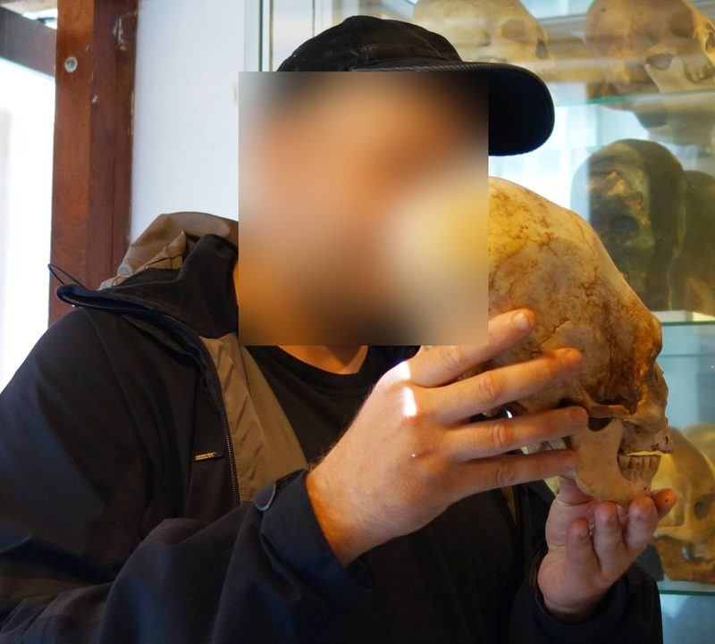

Що розповідають черепи?

На бічній стороні черепа чорнилом написано MRI DB. Чи можуть кілька літер розповісти, звідки цей череп і де зберігаються відомості про нього? Ця сторінка йде слідом так далеко, як дозволяють опрацьовані джерела.

Як збирався матеріал
«Я об’їздив усю земну кулю, і ось я тримаю в руках череп Starchild 2.»
- Перу, 1 листопада 2014 року. Jani фотографував видовжені черепи в перуанських музеях і в приватній колекції. Фото 01 і 03–11 зроблено під час цієї поїздки; на фото 03 і 04 череп тримає сам Jani. У відео Travel South власник колекції розповідає про свої черепи, Starchild 2 представлено на ім’я, а в підсобному приміщенні одного з музеїв зйомку спеціально дозволили. Фото 02 — добірка кадрів із цих відео.
- Каїр, 15 лютого 2024 року. У Єгипетському музеї він побачив кам’яні голови, склепіння черепа яких так само далеко витягнуте назад.
- Архів 2026 року. Було переглянуто фотографії, відео та відкриті джерела: путівники музеями, картки предметів і дослідження.
Три запитання
- Куди веде код на черепі? Написаний чорнилом MRI DB і картки предметів музею.
- Чому він називається Starchild 2? Назву запозичено в іншого, відомішого черепа з Мексики.
- Чому видовжена голова повторюється в кам’яних зображеннях Каїра? Мистецтво Амарни та перуанські черепи поруч.
Дорогою: вітрина з трьома головами з волоссям, розповідь власника колекції і що кажуть дослідження. Усі одинадцять фотографій зі спостереженнями зібрано в покажчику фотографій наприкінці.
Черепи на фотографіях — це людські рештки. Ця сторінка повідомляє лише те, що видно на фотографіях і в текстах експозиції, і те, що кажуть опубліковані дослідження. Фотографія не може розповісти про вік, хвороби чи походження померлого.
Фото 01 і 03–11 — фотографії Jani Korpi з Перу 2014 року, зроблені під час тієї самої поїздки, що й відео з музеїв, зняті 1 листопада 2014 року. Фото 02 — добірка кадрів із цих відео. Рік встановлено за вихідними назвами файлів відео (20141101…): розташування на фото 01 і 08 виглядає ідентично у відео _IlZYy2Mbpk і qlPq2wTEFEc, а в перуанських відео Travel South 2011 року немає зйомок черепів чи музеїв. «Ліворуч» і «праворуч» означають з погляду глядача. Той самий предмет може з’являтися на кількох фотографіях.
Як читати позначки
- T
- Результат дослідження
- A
- Розповідь хроніки або інший документ
- L
- Легенда або розповідь
- S
- Припущення
Подивіться, як із форми черепа народився уявний персонажОбличчя кам’яного міста: 13 пар зображень. ШІ-ілюстрація, вигадка, а не дослідження.
Стара фотографія, нове запитання для пошуку: куди веде MRI DB?

- Що видно на фото. На бічній стороні правого черепа від руки написано MRI DB і ряд цифр. Число, можливо, схоже на 3421, але кінець неясний, тому прочитання залишається відкритим.
- Порівняння з музейними матеріалами. AНа сторінці 25 звіту García Soto 2018 року наведено картку предмета з регіонального музею Іки. У графі «Otros códigos e inscripciones» зазначено MRI-DB-3869. Череп із картки зберігається в Museo Regional de Ica «Adolfo Bermúdez Jenkins», місце знахідки записано як Hacienda Chongos, а інший код — як MRI-01050-12 [2].
- Результат. Знайдено збіг формату коду: той самий префікс MRI-DB використовується на картках предметів музею Іки. Індивідуальний збіг залишається відкритим. Номери не збігаються, і сам лише префікс не ідентифікує череп, сфотографований Jani, і не пов’язує його з результатами ДНК зі звіту.
- Наступне запитання. Підтвердити повний номер за чіткішою фотографією та знайти відповідну каталожну картку музею.
Три місця розрізняються. Черепи та картки предметів зі звіту походять із регіонального музею Іки [2], який є іншою установою, ніж музей Наварро [3]. Вітрина з трьома головами з волоссям і розповідь власника колекції стосуються музею Наварро в Паракасі (вітрина). Назву підсобного приміщення у відео не показано (підсобне приміщення). Де зроблено фото 08, не підтверджено, і встановлення одного місця не ідентифікує весь матеріал. Зворотний пошук за зображеннями з усіма фотографіями черепів Jani (20 листопада 2026 року) не знайшов тих самих вітрин чи табличок більше ніде в інтернеті. Фото мандрівника на TripAdvisor із музею Наварро показує вітрину зі скляними полицями того самого типу, що на фото 07, але тих самих черепів на ньому впізнати не можна [20].
Вітрина з трьома головами з волоссям
У відео Jani dNgc018HQNA три голови лежать на окремих скляних підставках. Темний матеріал, схожий на волосся, оточує бік лівої голови. Середня — видовжений світлий череп із темною ділянкою волосся на склепінні. Права темна голова, менша за інші, стоїть на власній підставці.
На сторінці 175 путівника музеями 2023 року Міністерства культури Перу показано три дуже схожі на вигляд голови в тому самому порядку на скляних підставках. Відео знято в Museo Histórico Paracas «Juan Navarro Hierro» в Паракасі. Путівник представляє музей під цією назвою, і ним керує родина Наварро [1]. Jani Korpi підтвердив місце зйомки у 2026 році. Регіональний музей Іки — інша установа [3]. Путівник не підтверджує ні спорідненості, ні спільної могили, ні того, де зроблено інші фотографії. Освітлення й ракурс відрізняються від фото в путівнику.

Розповідь власника колекції
LУ відео dNgc018HQNA (знято 1 листопада 2014 року) оповідач — власник колекції Museo Histórico Paracas «Juan Navarro Hierro». За його словами, колекція є національним надбанням, але перебуває в його власності. Він каже, що один череп не з Америки, і стверджує, що його ДНК відповідає Північній Європі: Норвегії, Швеції, Фінляндії чи Росії. Про вітрину з трьома головами з волоссям він каже, що батька, матір і немовля знайшли в одній могилі і що волосся батька й матері було рудим, а в немовляти — світлим. У відео власник не показує ні звіту про дослідження, ні лабораторії, ні коду зразка.
Чи є дослідницький код у людини на фото? Знайти його не вдалося. На головах у вітрині не видно читабельного коду, а путівник музею не згадує дослідження ДНК [1]. У звіті García Soto один череп із пограбованої могили в Серро-Колорадо (S8) дав мітохондріальну гаплогрупу H, яка, згідно зі звітом, типова для Північної Європи. Другий зразок того самого черепа дав групу B5 [2]. Черепи зі звіту зберігаються у фондах регіонального музею Іки, і жоден із них не можна пов’язати з головами в цій вітрині.
Назви відео у формі запитань, наприклад «Ancient Skulls of Peru: Evidence of an Advanced Human Species?» (aqPy1X1mhGY) і «Ancient Skulls of humanoids: Proof of an Advanced Human Species?» (yIA-Dykw_40), — це назви відео S. Опубліковані дослідження не підтверджують ідею окремого виду людей: у досліджених матеріалах Паракаса черепи належать людям, чиїм головам надавали форму в дитинстві [4].


Starchild 2 і підсобне приміщення
LУ колекції та у відео Jani Investigating the Starchild 2 skull of Peru (Nov 2014) широкий круглий череп називають Starchild 2. Назву запозичено в іншого, відомішого черепа з Мексики. Ці два черепи краще не плутати:
Starchild 1 · Мексика
- Джерело назви
- Згодом череп стали називати Starchild skull [7]. Славу йому приніс американський письменник і дослідник паранормальних явищ Lloyd Pye (1946–2013), який придбав череп наприкінці 1990-х років і багато років представляв його як гібрид людини та інопланетянина [14]. Pye керував Starchild Project, який у власних текстах описується як неформальна дослідницька група, що координує дослідження з лютого 1999 року [15]. Офіційний сайт Pye lloydpye.com досі доступний [16].
- Відоме походження
- LЗгідно з історією, череп знайшли на початку 1930-х років у районі Чіуауа в Мексиці [7]. Історія знахідки не є результатом дослідження.
- LЗгідно з розповіддю самого проєкту, у 1930-х роках американська дівчинка-підліток знайшла два скелети в покинутій шахтній штольні в районі Мідного каньйону та забрала два черепи додому в Ель-Пасо. У 1998 році черепи передали Ray і Melanie Young, які запросили Pye долучитися. За даними проєкту, радіовуглецеве датування визначило вік черепа приблизно в 900 років [15].
- Дослідницькі дані, пов’язані з індивідом
- AСтаття в журналі Skeptical Inquirer узагальнює два тести ДНК 1999 і 2003 років, згідно з якими череп належить людині [7]. Оригінальні лабораторні звіти для цієї сторінки не опрацьовувалися, тому детальніших тверджень про результати не робиться.
- AЛабораторний звіт Trace Genetics від 12 серпня 2003 року, текст якого опубліковано в інтернеті як копію матеріалів проєкту: мітохондріальна ДНК зразка черепа Starchild (SCS-1) у двох окремих екстракціях відповідала індіанській гаплогрупі C, а зразок другого черепа, представленого разом із ним (SA-1), — гаплогрупі A. Згідно зі звітом, різні типи мтДНК виключають стосунки «мати — дитина», а матері обох, імовірно, були корінними американками. Ядерну ДНК зі зразка Starchild ампліфікувати не вдалося [17]. Підписаний оригінал для перегляду недоступний.
- LЗгідно з власним звітом проєкту 2011 року, неназваний генетик секвенував чотири фрагменти мтДНК, і проєкт витлумачив відмінності від людини як винятково великі. Згідно зі звітом, частина дослідників поки залишається анонімною [15]. Результат не опубліковано в рецензованому вигляді, тому тут це твердження проєкту.
Starchild 2 · Перу
- Джерело назви
- LКолекція та оповідач у відео, Travel South, 1 листопада 2014 року.
- Відоме походження
- Перуанська колекція. Jani сфотографував череп (фото 04) і зняв його на відео 1 листопада 2014 року. Місце знахідки невідоме.
- Дослідницькі дані, пов’язані з індивідом
- Пошук, проведений для цієї сторінки, не виявив жодного опублікованого дослідження, яке можна було б перевірно пов’язати з цим індивідом. Результати ДНК мексиканського черепа не можна переносити на цей череп.
Єдине, що об’єднує ці два черепи, — назва.
Того самого дня, 1 листопада 2014 року, Jani з дозволу зняв підсобне приміщення іншого музею, де на білій тканині лежать черепи та загорнуті тіла померлих (qlPq2wTEFEc). Назву місця у відео не показано. Розташування на фото 05 і 09, імовірно, те саме.


Каїр 2024: схожі видовжені голови в Єгипті
15 лютого 2024 року в Єгипетському музеї в Каїрі Jani сфотографував кам’яні голови, склепіння черепа яких далеко витягнуте назад. Форма нагадує перуанські черепи, але знімки зроблено на іншому континенті й приблизно на дев’ять років пізніше за перуанські фотографії черепів (2014).
Поруч: скульптура та людські рештки





На що дивитися: на вигин склепіння черепа, лінію чола і на те, як далеко потилиця виступає за вухо. Знімки зроблено з різних напрямків і відстаней, тому точні пропорції порівняти не можна.
Видовжене склепіння черепа — художня умовність чи реальна форма голови? AОпис предмета в Єгипетському музеї Берліна відповідає: згідно з ним, витягнуті назад голови доньок — суто стилістичний прийом, а не ознака спадкових чи навмисно спричинених деформацій [13]. TЗгідно з виставковим виданням Метрополітен-музею, історики мистецтва вважали, що митці Амарни зі стилістичних міркувань перебільшували цілком звичайні фізичні риси [19].

TМистецтво амарнського періоду зображує доньок фараона Ехнатона з видовженими головами. За даними Global Egyptian Museum, кварцитова голова JE 44869 з каїрського музею — імовірно, Мерітатон, старша донька Ехнатона, і її знайшли 1912 року в майстерні скульптора Тутмоса [11]. Голова царівни того самого типу зберігається в Метрополітен-музеї в Нью-Йорку [12]. Згідно з путівником каїрського музею, висота JE 44869 — 21 см, і вона експонується в залі 3 на першому поверсі [18], а ще одна голова царівни з тієї самої майстерні, JE 44870 (жовтий кварцит, 19 см), також перебуває в Каїрі [19]. На фото Jani дві голови стоять поруч, але їхню відповідність цим двом предметам підтвердити не можна. Номери предметів на фотографіях Jani не розрізнити, тому точна ідентифікація знятих ним голів залишається відкритою.
Дивіться у відео: дві кам’яні голови, на 51:22 · екскурсія музеєм з 51:31 (Travel South: Exploring the Egyptian Museum in Cairo, знято 15 лютого 2024 року). Перуанська паралель: Investigating Elongated Skulls in a Peruvian Museum (знято 1 листопада 2014 року).
Зв’язок із Перу лише візуальний. Голови з Амарни — скульптури, перуанські черепи — людські рештки; у досліджених матеріалах Паракаса видовжену голову витлумачили як результат надання форми в дитинстві (науковий контекст). Каїрські фотографії зроблено у 2024 році, перуанські — у 2014 році. ШІ-ілюстрації цих пар розміщено на сторінці кам’яного міста: пара 12 і пара 13 (Кам’яні обличчя Каїра і черепи Перу).
SЩо б ви стали досліджувати?
Фотографії викликають запитання, які ставлять багато глядачів. Тут їх зібрано як припущення, і для кожного вказано, які дані могли б його розв’язати.
- Видовжені черепи — це інший вид?
- Знадобилися б код зразка, пов’язаний з індивідом, каталожна картка та опублікований аналіз скелета й геному в порівнянні з людським матеріалом. У досліджених матеріалах Паракаса черепи людські [4].
- Що розповіла б ДНК?
- Перший крок — код зразка, який пов’язує саме цей череп із лабораторним звітом. Без нього результат ДНК, про який ідеться у відео (розповідь власника), залишається розповіддю.
- Чи стояла за цим розвинена цивілізація?
- Знадобилися б контекст знахідки, датування та артефакти, опубліковані у спосіб, що піддається перевірці. Уявну версію розкрито в розповіді Обличчя кам’яного міста, і це вигадка.
Які висновки можна зробити з досліджень?
| Тема | Що кажуть дослідження | Джерело |
|---|---|---|
| Надання форми черепу в Паракасі | TСеред померлих Паракас-Кавернас (Серро-Колорадо, близько 550–200 рр. до н. е.) було класифіковано форму черепа 159 індивідів. Зміну форми спостерігали у 98 відсотків із них, а найпоширенішим типом була вертикальна табулярна форма. Цифра стосується померлих із цього дослідження, а не всього населення. | [4] |
| Пропорції обличчя та черепа | T19 черепів дорослих із Перу зі збірки Музею антропології та етнології Флорентійського університету, 9 зі зміненою формою і 10 без змін. Форма верхньої частини черепа в групах різнилася; середня форма піднебіння значущо не різнилася. Дослідження стосувалося піднебіння, а не вигляду обличчя, і вибірка була невеликою. | [8] |
| ДНК регіону | T218 індивідів із району Пальпи, півострова Паракас і високогір’я, близько 800 р. до н. е. — 800 р. н. е. Результат за кодувальною ділянкою отримано для 130 індивідів, послідовність контрольної ділянки — для 104. Населення культури Наска генетично було близьким до попереднього населення Паракаса. Популяційні дані не говорять про походження померлого на окремій фотографії. | [10] |
| Звіт 2018 року | AПідсумковий звіт García Soto: вісім черепів із фондів регіонального музею Іки, 30 зразків, із яких п’ять дали результат. Радіовуглецевих дат отримати не вдалося. Результати (таблиця 3): B4 у двох черепів, H і R в одного, H і B5 у різних зразків черепа S8. У трьох ДНК була надто зруйнована, а один не аналізувався. Автор закликає до подальших аналізів. Це звіт, а не рецензована стаття. Зв’язку з індивідами на фотографіях Jani не знайдено. | [2] |
| Отвори та малий череп | TЯк утворився отвір у черепі, який вік померлого і яка причина форми — за фотографією це залишається відкритим. Отвір може бути зроблений людьми, але схожі отвори спричиняють також вроджені аномалії, травми, інфекції, пухлини та пошкодження в ґрунті. Щоб їх розрізнити, потрібно дослідити кістку. | [6] |
| Назва Starchild | AНазва походить від черепа з імовірної знахідки в районі Чіуауа в Мексиці. Згідно зі статтею в Skeptical Inquirer, два тести ДНК 1999 і 2003 років показали, що це людський череп. Для перуанського Starchild 2 не знайдено ні картки предмета, ні дослідження, які пов’язували б із ним цей результат. | [7] |
Що знадобилося б для підтвердження індивіда? Найсильніший кандидат — правий череп на фото 08 (пошук). Чіткий великий план усього коду або каталожна картка музею могли б пов’язати фотографію з місцем знахідки та кодом зразка. Без цього зв’язку вік, датування, спорідненість і результат ДНК залишаються відкритими.
Що досліджують на цю тему у 2026 році?
Два дослідження, опубліковані цього року, показують, куди рухається вивчення зміни форми черепа.
- TWard et al., iScience 2026. Дослідники зібрали набір даних із 1772 випадків навмисної зміни форми черепа в Америці та вивчили їхні часові й географічні закономірності. Згідно з моделюванням, практика вперше з’явилася в Центральній Америці, а потім поширилася в Північну та Південну Америку. Кільцева форма з’явилася в регіонах, де табулярна вже існувала, і швидко поширилася [9].
- TOxilia et al., Applied Sciences 2026. Тривимірний аналіз форми 19 перуанських черепів (9 зі зміненою формою, 10 без змін): форма мозкової коробки в групах явно різнилася, форма піднебіння — ні. У цих черепах зміна форми, отже, проявилася в мозковій коробці, але не в середній формі піднебіння [8].
Жодне з досліджень не ідентифікує індивідів, сфотографованих Jani, і не показує зв’язку між Єгиптом і Перу. Результат Oxilia також не підтверджує облич ілюстрованих персонажів на сторінці кам’яного міста: вони вигадані.
Покажчик фотографій: фото 01–11
Для кожної фотографії спершу показано найцікавіше спостереження. Решта деталей відкривається в розділі «Інші спостереження».
01 Круглий череп спереду

Верхня частина та очні ямки
Верхня частина черепа широко вигинається в обидва боки. Видно обидві очні ямки, але на фото немає нижньої щелепи та значної частини нижньої частини обличчя. Це змінює видиму пропорцію між головою та обличчям.
Інші спостереження
Порівняння з фото 04 і 10
Круглий контур, збережена ділянка очних ямок і відсутня нижня частина обличчя узгоджуються між собою. Спільного видимого коду предмета на фотографіях немає, але фото 01, 04 і 10, імовірно, показують той самий предмет із трьох боків.
Передісторія назви Starchild
Той самий предмет, імовірно, з’являється і у відео Jani _IlZYy2Mbpk, у назві якого череп названо Starchild 2. Оригінальний череп Starchild пов’язують із Чіуауа в Мексиці, і два дослідження ДНК (1999 і 2003) показали, що це людський череп [7]. Картки предмета для перуанського черепа, яка пов’язувала б його з тим випадком або підтверджувала прізвисько, не знайдено.
Ілюстрація 01: Оптик налаштовує призму (ШІ-ілюстрація, вигадка)
02 Два видовжені черепи у відеодобірці

Верхній ряд і лівий кадр середнього ряду
Чотири кадри з відео aqPy1X1mhGY показують той самий світлий високий череп із кількох боків. Нижню щелепу видно. Згори краще видно форму склепіння черепа та частину, що тягнеться за чоло.
Інші спостереження
Друге відео
У двох правих кадрах середнього ряду та двох лівих кадрах нижнього ряду джерело — відео yIA-Dykw_40. Темніша поверхня, інший бічний профіль і видимі зуби допомагають стежити за предметом від кадру до кадру. Імовірно, це інший череп, ніж у верхньому ряду.
Правий нижній кут
Третє відео — dNgc018HQNA. Людина тримає світлий череп. За кадром не можна вирішити, чи це той самий череп, що й один із двох інших. Тому дев’ять кадрів зображення не означають дев’ять індивідів.
Ілюстрація 02: Провулком везуть вантаж каменю (ШІ-ілюстрація, вигадка)
03 Видовжений череп у руках
Предмет на фото
Світлий череп тримають у руках боком. Обличчя та зуби спрямовані праворуч. Потилиця далеко виступає за обличчя і загинається вгору. Пальці закривають частину скроні та щоки.
Інші спостереження
Зв’язок з рештою матеріалу
На останньому кадрі фото 02 видно схожий світлий череп у руках. Порівняння не виявляє спільного індивідуального коду.
Що дає масштаб
Руки допомагають оцінити розмір предмета. На фото немає масштабної лінійки та тривимірного вимірювання, тому об’єм чи розмір мозку залишилися б здогадами.
Ілюстрація 03: Каменярка перевіряє шов (ШІ-ілюстрація, вигадка)
04 Круглий череп у руках: Starchild 2
Предмет на фото
Jani Korpi тримає обома руками світлу круглу частину черепа. Вона нахилена до камери, і очні ямки видно під кутом.
Інші спостереження
Ідентифікація
Форма та відсутні частини лицевої ділянки нагадують предмет на фото 01 і 10. Долоні дають краще уявлення про масштаб, ніж великий план, знятий на столі.
Що залишається відкритим
Розмір долонь і перспектива не говорять про вік померлого. За фото не можна сказати, чи це дитячий череп і чи спричинена форма якоюсь хворобою. Дослідницької чи каталожної картки індивіда немає. Колекція називає череп Starchild 2 (Starchild 2 і підсобне приміщення).
Ілюстрація 04: Садівник роздивляється насінний стручок (ШІ-ілюстрація, вигадка)
05 Темний череп збоку

Темний череп на передньому плані
Профіль обличчя спрямований ліворуч, а потилиця загинається праворуч. Вигляд збоку показує довжину краще, ніж вигляд спереду. Жодної розпізнавальної позначки на цьому фото надійно не розрізнити.
Інші спостереження
Світліший череп позаду
На склепінні черепа видно нерівні темні плями. Схожий візерунок видно на лівому черепі на фото 09. Підставка експозиції та предмети на задньому плані теж нагадують розташування на фото 09, тож це, імовірно, та сама експозиція.
Відблиск у склі
Розмиті профілі ліворуч — відблиски в склі. Їх не можна вважати додатковими індивідами. Колір освітлення й відблиски також впливають на сприйняття відтінку поверхні.
Ілюстрація 05: Наглядачка вод вирівнює канал (ШІ-ілюстрація, вигадка)
06 Два черепи на одній полиці

Світлий череп ліворуч
Задня частина черепа загинається по діагоналі вгору. Череп стоїть на чорній підставці. Маленька табличка з текстом попереду здебільшого надто розмита, щоб її прочитати.
Інші спостереження
Череп із темною поверхнею праворуч
Порівняно з лівим контур склепіння черепа вертикальніший. Нижню щелепу можна розрізнити. Під ділянкою вуха видно написане від руки число 161. Щоб з’ясувати його значення, знадобився б реєстр колекції.
Хто що стверджує
Біля правого черепа стоїть табличка експозиції. Класифікація на табличці належить самій експозиції і не говорить про місце знахідки індивіда. У склі також видно відблиски.
Ілюстрація 06: Ткалі роздивляються тканину (ШІ-ілюстрація, вигадка)
07 Три черепи на одній полиці

Лівий череп
Високе світле склепіння черепа і вузька лобова ділянка. Видно очні ямки, носовий отвір і зубні дуги.
Інші спостереження
Середній череп
Порівняно із сусідніми череп малий. Його піднято на окрему прозору підставку. На склепінні є отвір, край якого видно. Фотографія не показує ні того, як утворився отвір, ні віку померлого. Щоб з’ясувати причину отвору в черепі, потрібно дослідити кістку, оскільки схожі отвори можуть спричиняти також вроджені аномалії, травми, інфекції, пухлини та пошкодження в ґрунті [6].
Правий череп
Бічний профіль спрямований ліворуч, а потилиця заповнює правий край знімка. Можна розрізнити виличну дугу та ряди зубів. На фото немає жодних відомостей про спорідненість між трьома індивідами. Це інше розташування, ніж вітрина з трьома головами з волоссям, представлена нижче.
Ілюстрація 07: Зустріч на кукурудзяному ринку (ШІ-ілюстрація, вигадка)
08 Два черепи та рукописні коди
Лівий череп
На світлому черепі є напис, обведений червоним, а на бічній стороні чола видно чорний напис. Кінець напису схожий на число 18, але прочитання всього напису непевне.
Інші спостереження
Правий череп
На бічній стороні голови можна розрізнити написаний від руки код, що починається з MRI DB. Ряд цифр, можливо, схожий на 3421, але кінець краще залишити відкритим. Написи видно і на склепінні черепа.
Порівняння з реєстрами
Той самий префікс MRI-DB трапляється на картках предметів з Іки у звіті García Soto, наприклад напис MRI-DB-3869 на сторінці 25 звіту [2]. У списку та ілюстрованих картках звіту надійної відповідності цьому черепу не знайдено, тому місце знахідки чи дані ДНК зі звіту не можна приписати йому (пошук).
Ілюстрація 08: Від брами тягнеться скляний навіс (ШІ-ілюстрація, вигадка)
09 Текст експозиції Paracas Necrópolis
Вужчий лівий череп
Профіль вертикальніший, ніж у правого, а на поверхні нерівний темний візерунок. Положення дає змогу бачити обидві очні ямки. Череп нагадує задній череп на фото 05.
Інші спостереження
Темніший правий череп
Потилиця сильно загинається назад. На поверхні є зроблені від руки написи. Нижню щелепу та ряд зубів можна розрізнити збоку. Імовірно, це той самий череп, що на передньому плані фото 05.
На табличці є слово tipo
Табличка називає тип. Саме лише її розташування не показує, до якого черепа вона належить і з якої могили походить індивід. Некрополь Варі-Каян, який Julio C. Tello розкопував у 1927–1928 роках, — окрема, задокументована пам’ятка [5].
Та сама експозиція в музейному відео Jani
Горизонтальну основу, зв’язану з палиць, видно і на обкладинці музейного відео Jani Investigating Elongated Skulls in a Peruvian Museum (Nov 2014) (обкладинка на сторінці кам’яного міста). Спільна деталь допомагає впізнати експозицію, але місце знахідки та ідентичність предметів залишаються відкритими.
Ілюстрація 09: Пісня водяного колеса (ШІ-ілюстрація, вигадка)
10 Круглий череп збоку

Вигляд збоку
На фото видно зубчастий шов, що йде від склепіння вниз по боковій стороні. Під ним видно край очної ямки. Щелепи та зубів на фото немає.
Інші спостереження
Що додає ракурс
Круглу верхню частину предмета, що лежить на чорній підставці, видно збоку цілком. Разом із фото 01 вона показує, наскільки по-різному виглядає та сама форма спереду і збоку. Предмет, імовірно, той самий, що на фото 01 і 04.
Межі індивідуальних даних
На фотографіях немає ні таблички з місцем знахідки, ні дати, ні номера в реєстрі. Видимість швів, розмір збереженої верхньої частини чи відсутність нижньої щелепи самі по собі не розв’язують питань про вік, причину форми чи зв’язок з іншими індивідами.
Ілюстрація 10: Флейтист у кам’яному провулку (ШІ-ілюстрація, вигадка)
11 Уся вітрина, полиця за полицею

Верхня полиця
Ліворуч череп, видимий під кутом; посередині високо здіймається верхня частина черепа; праворуч темніший профіль, частина обличчя якого виходить за кадр.
Інші спостереження
Друга полиця
Праворуч дуже темна голова, у якої можна розрізнити зуби. Ліворуч видно відображення фотографа. Використаний спосіб збереження за поверхнею визначити не можна.
Третя полиця
Ліворуч світлий заокруглений профіль; посередині світлий череп, далеко витягнутий назад; праворуч жовтуватий череп на чорній підставці. У склі відбиваються форми, що перебувають позаду.
Четверта полиця
У задній частині лівого предмета видно кутастий отвір. Середній повернений до камери потилицею. Над обличчям правого — темний отвір. Як утворилися отвори, залишається відкритим [6].
П’ята полиця
Ліворуч коричневий бічний профіль; середній, помаранчевого відтінку, повернений до камери. Праворуч у верхній частині світлого черепа видно темний отвір.
Шоста полиця
Ліворуч на світлій поверхні видно невеликі темні плями. Над обличчям середнього — більший отвір. Праворуч видовжений жовтуватий череп видно навскіс спереду.
Нижня полиця
Коричневий череп ліворуч, червонувато-коричневий посередині та світлий праворуч стоять у передньому ряду. Нижній край полиці щільно обрізаний кадром. Індивідуальні коди надійно прочитати не можна.
Ілюстрація 11: Обмін кошиками в місті терас (ШІ-ілюстрація, вигадка)
Джерела
- Міністерство культури Перу: Guía de museos e instituciones museales del Perú 2023, с. 175 (Museo Histórico Paracas «Juan Navarro Hierro»). Відкрити джерело
- García Soto, Rubén 2018: Proyecto de investigación arqueogenético de cráneos Paracas Cavernas y Paracas Necrópolis de las colecciones del Museo de Sitio de Paracas y del Museo Regional de Ica. Informe final, Lima. Звіт, а не рецензована стаття. Таблиці 1 і 3, картка предмета с. 25. Відкрити джерело
- Міністерство культури Перу: Museo Regional de Ica «Adolfo Bermúdez Jenkins», інформаційна сторінка музею. Відкрити джерело
- Gómez-Mejía, J., Aponte, D., Pezo-Lanfranco, L. & Eggers, S. 2022: Intentional cranial modification as a marker of identity in Paracas Cavernas, South-Central Coast of Peru. Journal of Archaeological Science: Reports 41, 103264. Відкрити джерело
- Arqueología Paracas – Wari Kayan: Acerca de las Necrópolis de Wari Kayan (сторінка дослідницького проєкту). Відкрити джерело
- Verano, John W. 2016: Differential diagnosis: Trepanation. International Journal of Paleopathology 14, 1–9. Відкрити джерело
- Radford, Benjamin 2018: ’Alien’ Mummy Identified By DNA. Skeptical Inquirer 42(4), липень–серпень 2018, с. 10–11 (англійською). Відкрити джерело
- Oxilia, G., Paternostro, F. et al. 2026: Palatal Morphology in Artificially Modified Crania: Evidence for Limited Craniofacial Integration. Applied Sciences 16(17), 8695. Відкрити джерело
- Ward, S. M., Sánchez-Villagra, M. R., Raymond, C., Lazaro, G. R., Lynch, S. & Wilson, L. A. B. 2026: Intentional cranial modifications in the Americas: The temporal and spatial patterns of potential transmissions and cultural innovations. iScience 29(5), 115643 (англійською). doi:10.1016/j.isci.2026.115643 · PMC13141071
- Fehren-Schmitz, L., Reindel, M., Tomasto Cagigao, E., Hummel, S. & Herrmann, B. 2010: Pre-Columbian population dynamics in coastal southern Peru. American Journal of Physical Anthropology 141(2), 208–221. Відкрити джерело
- Global Egyptian Museum: Head of a princess, JE 44869 (англійською). Відкрити джерело
- The Metropolitan Museum of Art: Head of a princess from a group statue, 547692 (англійською). Відкрити джерело
- Ägyptisches Museum und Papyrussammlung, Berlin: House altar, Akhenaten, Nefertiti and their three daughters, ÄM 14145 (Google Arts & Culture, англійською). Відкрити джерело
- Wikipedia: Lloyd Pye (англійською, дата звернення 20 листопада 2026 року). Відкрити джерело
- Johnson, Andrew (ред.) 2015: The Starchild Skull. Укладено за текстами Lloyd Pye (starchildproject.com, lloydpye.com), містить Starchild Skull DNA Analysis Report 2011 (англійською). Відкрити джерело
- Lloyd Pye – The Official Website of Lloyd Pye (англійською, дата звернення 20 листопада 2026 року). Відкрити джерело
- Trace Genetics 2003: Report on the DNA analysis from skeletal remains from two skulls, 12 серпня 2003 року. Текст у вигляді копії на сайті Biblioteca Pleyades (англійською). Відкрити джерело
- Salah, Samy: Akhenaten. Egyptian Museum in Cairo (путівник музеєм, текст в Internet Archive, англійською), предмет 2 Head of a Princess. Відкрити джерело
- Arnold, Dorothea 1996: The Royal Women of Amarna: Images of Beauty from Ancient Egypt. The Metropolitan Museum of Art, Нью-Йорк (каталожні номери 50–51 і розділ L. Green Who Was Who, англійською). Відкрити джерело
- TripAdvisor: Paracas History Museum – Juan Navarro Hierro, фото мандрівника «a large skull (25-60% larger than normal)» (англійською). Відкрити джерело
Відео: aqPy1X1mhGY · yIA-Dykw_40 · dNgc018HQNA · _IlZYy2Mbpk · qlPq2wTEFEc (Travel South, знято 1 листопада 2014 року) · _ClDtZ7vcDc (Travel South, знято 30 жовтня 2014 року).
Подивіться, як із форми черепа народився уявний персонажОбличчя кам’яного міста
Паракас і УакачинаСторінка напрямку